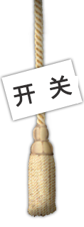

FRID射频识别技术
第五章习题作业
小组成员:
于龙栋 谭贞贞
聂小凡 欧阳小刚

习题五第一题
姓名：于龙栋;
学号：1408095052;
习题5.1
信息安全主要解决那些问题？
答：信息安全主要解决数据保密和认证的问题。数据保密就是采取复杂多样的措施对数据加以保护，防止数据被有意或无意地泄漏给无关人员，造成伤害。认证分为信息认证和用户认证两个方面，信息认证是指信息在从发送到接收整个通路中没有被第三者修改和伪造，用户认证是指用户双方都能证实对方是这次通信的合法用户。
习题五第二题
姓名：于龙栋;
学号：1408095052;
习题5.2
2.简述对称密码体制和非对称密码体制的特点和区别？
答： 对称密码体制的主要特点是加密密钥和解密密钥相同。在对称密码体制中，从得到密文的序列结构来划分，可分为序列密码和分组密码。序列密码是目前射频识别中采用的主要方式，它利用密钥来控制密钥序列产生器形成流密码，该流密码与明文异或获得密文流。密钥序列产生器由伪随机码产生器构成，典型的伪随机码有m序列和M序列，它们可由反馈移位寄存器产生。分组密码的主要加密方法有DES和AES算法等。 在非对称密码体制中加密密钥是公开的，解密密钥是保密的。RSA和ECC算法是其典型的算法。 区别：对称密码只有一个共用的密钥；非对称密码有两个不同的密钥，用一个加密，另外一个解密。非对防称密码计算量要大很多，一般是使用双方确定了一对非对称密码密钥，用来传输临时决定的一个对称密码密钥，然后用对称密码加密通信。
习题五第三题
姓名：谭贞贞;
学号：1408095052;
习题5.3
什么是序列密码？什么是伪随机码？
答： 序列密码利用密钥产生一个密钥流Z=Z1Z2Z3…，然后利用此密钥流依次对明文X=X0X1X2...进行加密，这样产生的密码就是序列密码，也称流密码。密钥流由密钥流发生器f产生：zi=f(k,si)，这里的si是加密器中存储器（记忆元件）在i时刻的状态，k是密钥。序列密码方案的发展是模仿“一次一密”系统的尝试。 伪随机码的结构可以预先确定，可重复产生和复制，具有某种随机序列随机特性的序列码。伪随机码序列一般可以利用移位寄存器网络产生，该网络由R级串联双态器件移位脉冲产生器和模二加法器组成。该网络可以产生码长为15的伪随机码。在计算机、通信系统中我们采用的随机数、随机码均为伪随机数、伪随机码。所谓“随机码”，就是无论这个码有多长都不会出现循环的现象，而“伪随机码”在码长达到一定程度时会从其第一位开始循环，由于出现的循环长度相当大，例如CDMA采用42的伪随机码，重复的可能性为4.4万亿分之一，所以可以当成随机码使用。
习题五第四题
姓名：谭贞贞;
学号：1408095052;
习题5.4
ｍ序列有何特点？什么是同宗ｍ序列？试设计一个本原多项式ｆ（ｘ）＝１＋ｘ＋ｘ＾４的ｍ序列产生器，测试其周期值。
答： m序列具有随机二进制序列的优选信号的特点 若寄存器的初始值和本原多项式确定，则可以得到一个m序列，其循环周期为L=2^n-1。将序列元素按顺序移位，就可以产生2^-1个不同相位的循环序列。这2^-1个循环序列称为同宗m序列。
下一页>>
习题五第五题
姓名：谭贞贞;
学号：1408095052;
习题5.5
5.简述DES算法的实现过程？
答： 1 密钥生成 1.1 取得密钥 1.2 等分密钥 1.3 密钥移位 1.4 密钥的选取 2 数据的加密操作 2.1 取得数据 2.2 初始换位 2.3 数据扩展 2.4 数据压缩 2.5 数据换位 2.6 交换数据 2.7 迭代 2.8 数据整理
习题五第六题
姓名：聂小凡;
学号：1408095033;
习题5.6
6.给出基于素域GF(p)的特征值不等于2和3的椭圆曲线方程，并简述椭圆曲线密钥的生成方法。
答：方程为:y^2=x^3+ax+b (a,b属于K，△=4a^3+27b^2≠0,△≠0) 密钥生成方法: 令E是GF(p)上的椭圆曲线，P是E上的点，设P的阶是素数n。则素数p.椭圆曲线方程E.点p和阶n构成公开参数组。私钥是在(1,n-1)内随机选择的正整数d，相应的公钥是Q=dP。用椭圆曲线离散对数由公开参数组和公钥Q求私钥d。
习题五第七题
姓名：聂小凡;
学号：1408095033;
习题5.7
7.简述椭圆曲线的基本EIGamal加/解密算法的过程？
答：1. 加密算法 首先把明文m表示为椭圆曲线上的一个点M，然后再加上KQ进行加密。其中，K是随机选择的正整数，Q是接收者的公钥。发方将密文c1=KP和c2=M+KQ发给接收方。 2. 解密算法 接收方用自己的私钥计算 dc1=d(KP)=K(dP)=KQ 进而可恢复出明文点M为 M=c2-KQ .说明射频识别中阅读器与应答器的三次认证过程？ 认证步骤如下： ①阅读器发送查询口令的命令给应答器，应答器作为应答响应传送所产生的一个随机数RB给阅读器。 ②阅读器产生一个随机数RA，使用共享的密钥K和共同的加密算法EK，算出加密数据块TOKEN AB,并将TOKEN AB传送给应答器。 TOKEN AB=Ek(RA，RB) ③应答器接收到TOKENAB后进行解密，将取得的随机RB’与原先发送的随机数RB进行比较，若一致则阅读器获得了应答器的确认。 ④应答器发送另一个加密数据块TOKEN BA给阅读器，TOKEN BA为 TOKEN BA=Ek(RBI,RA)式中，RA为从阅读器传来的随机数，RBI为随机数。 ⑤阅读器接受到TOKEN BA并对其解密，若收到的随机数RA’与原先发送的随机数RA相同，则完成了阅读器和应答器的认证。
习题五第八题
姓名：聂小凡;
学号：1408095033;
习题5.8
.说明射频识别中阅读器与应答器的三次认证过程？
答：认证步骤如下： ①阅读器发送查询口令的命令给应答器，应答器作为应答响应传送所产生的一个随机数RB给阅读器。 ②阅读器产生一个随机数RA，使用共享的密钥K和共同的加密算法EK，算出加密数据块TOKEN AB,并将TOKEN AB传送给应答器。 TOKEN AB=Ek(RA，RB) ③应答器接收到TOKENAB后进行解密，将取得的随机RB’与原先发送的随机数RB进行比较，若一致则阅读器获得了应答器的确认。 ④应答器发送另一个加密数据块TOKEN BA给阅读器，TOKEN BA为 TOKEN BA=Ek(RBI,RA)式中，RA为从阅读器传来的随机数，RBI为随机数。 ⑤阅读器接受到TOKEN BA并对其解密，若收到的随机数RA’与原先发送的随机数RA相同，则完成了阅读器和应答器的认证。
<<上一页
下一页>>
习题五第九题
姓名：欧阳小刚;
学号：1408095034;
习题5.9
3.说明应答器中的分级密钥和存储区分页密钥的功能和应用.
答：分级密钥是指应答器中存在有两个或两个以上具有不同等级访问权限的密钥，例如，密钥A仅可读取存储区中的数据，而密钥B对数据区可以读、写。如果阅读器A只要密钥A，则在认证后它仅可读取应答器中的数据，但不能写入。而阅读器B如果具有密钥B，则认证后可以对存储区进行读、写。分级密钥可用于很多场合。例如，在城市公交中，公交车上的阅读器仅具有付款的减值功能，而发售处的阅读器可具有升值（充值）功能。存储区分页密钥将存储区分为若干独立的段，不同的段用以存储不同的应用数据，如身份信息，公交卡和停车证中的信息。在这些应用中，各个分页的访问，都需要用该分页的密钥认证后才能进行，即各个分页都用单独的密钥保护。
习题五第十题
姓名：欧阳小刚;
学号：1408095034;
习题5.10
10.为什么要对密钥进行分层管理？何谓主密钥，二级密钥和初级密钥？
为了保证可靠的总体安全性，对于密钥采用分层管理。初级密钥即数据的加密密钥，用来保护数据，即对数据进行加密和解密；二级密钥即密钥的加密密钥，是用于加密保护初级密钥的密钥；主密钥则用于保护二级密钥。
<<上一页